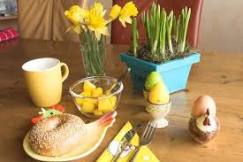

Пасха (8 апреля) Самый важный религиозный праздник в Норвегии –это Пасха. Этот праздник отмечают все христиане , радуясь воскресению Христа. Но основная часть жителей Норвегии – это лютеране, поэтому празднование Пасхи в Норвегии немного отличается от празднования в других странах. Норвежцы не придают особого значения религиозной основе этого праздника, и лишь немногие верующие приходят в храм на Пасху. Основная масса норвежцев едет на Пасхальные выходные отдыхать в горы и покататься на лыжах, а дети уходят на недельные каникулы. В Норвегии Пасху встречают не только крашеными яйцами, но и пасхальными кроликами и цыплятами. Их изготавливают обычно из различных материалов и их можно увидеть где угодно : на витринах магазинов, на окнах и дверях домов, на открытках и в журналах, в виде сувениров и наклеек и т.д. В течении недели Норвегия отмечает Пасху, а на пасхальное воскресенье принято встречать рассвет и дарить друг другу пасхальные яйца.
Рождество (25 декабря) Католическое Рождество – это праздник, приуроченный к рождению Спасителя Иисуса Христа. В Норвегии празднование начинается накануне. В ночь с 25 на 26 декабря во всех церквях страны проходят праздничные мессы и службы. После окончания служб норвежцы устраивают различные церемонии и обряды, посвященные Санта Клаусу – Юлениссе. Обязательным элементом Рождества является елка. Она должна стоять в каждом доме, где вокруг нее водят хороводы и поют песни. Сам праздник Рождества принято встречать дома, в кругу семьи за праздничным столом.
Масленица (10 февраля) Масленица отмечается перед началом великого поста. В Норвегии она празднуется 3 дня и совмещает в себе и языческие, и христианские традиции. Такие традиции просматриваются в обрядах, которые прославляют весну и плодородие. Одним из интереснейших обрядов празднования масленицы в Норвегии является хлестание березовой «масленичной веткой». Это березовая ветка, обернутая бумагой и украшенная цветами, с которой ходили по домам и хлестали тех, кто рано не встал в этот день, а еще спит. Со спящих стягивали одеяла и хлестали веткой для изгнания злых духов. Приходящих в дом с этой веткой, угощали заранее приготовленными сдобными булочками.